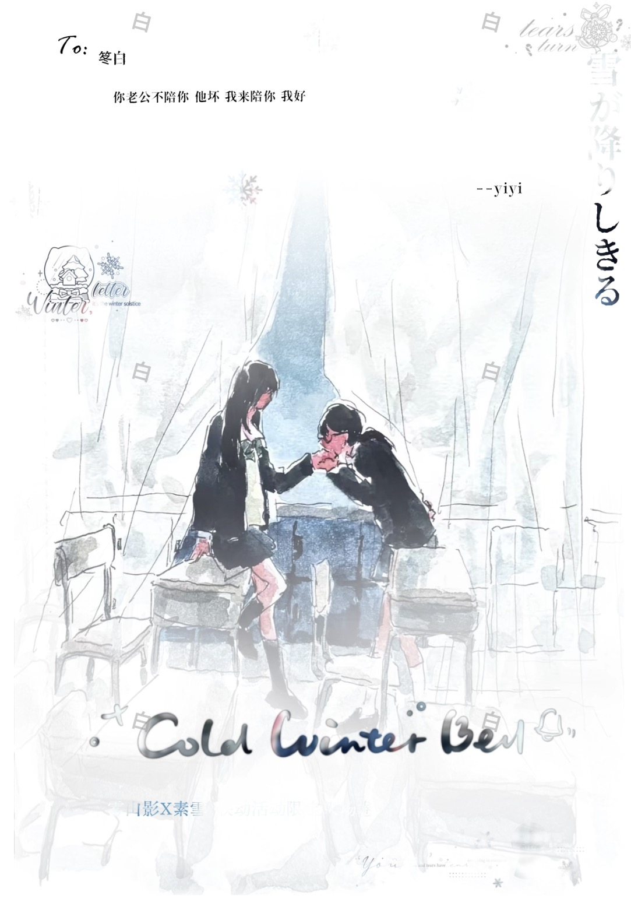
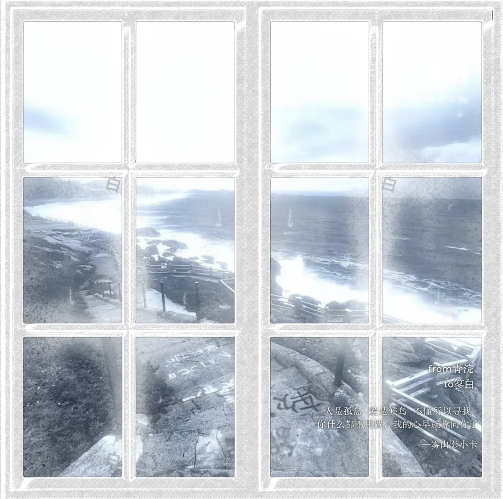
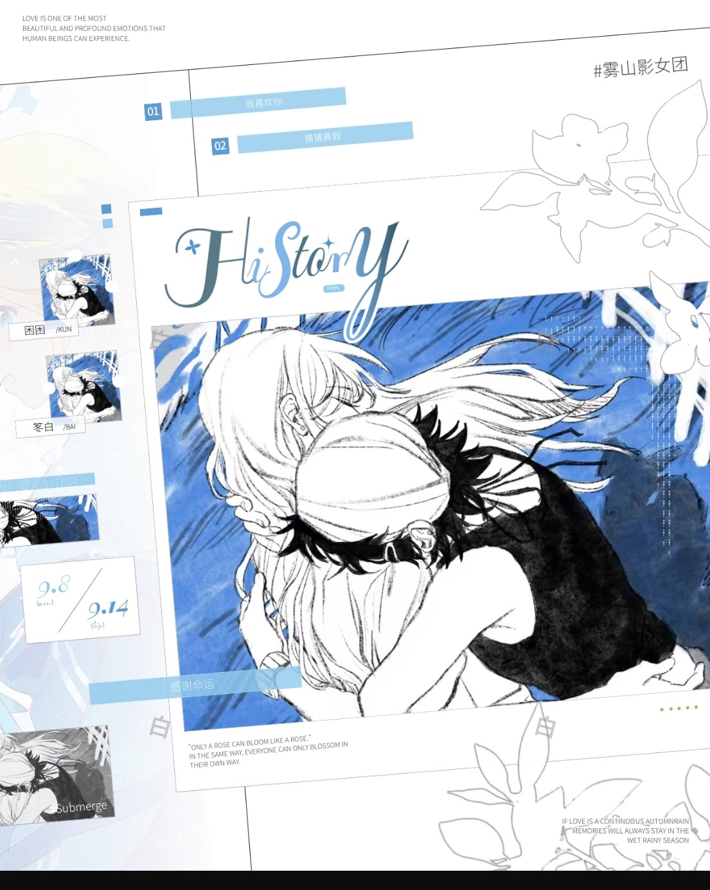
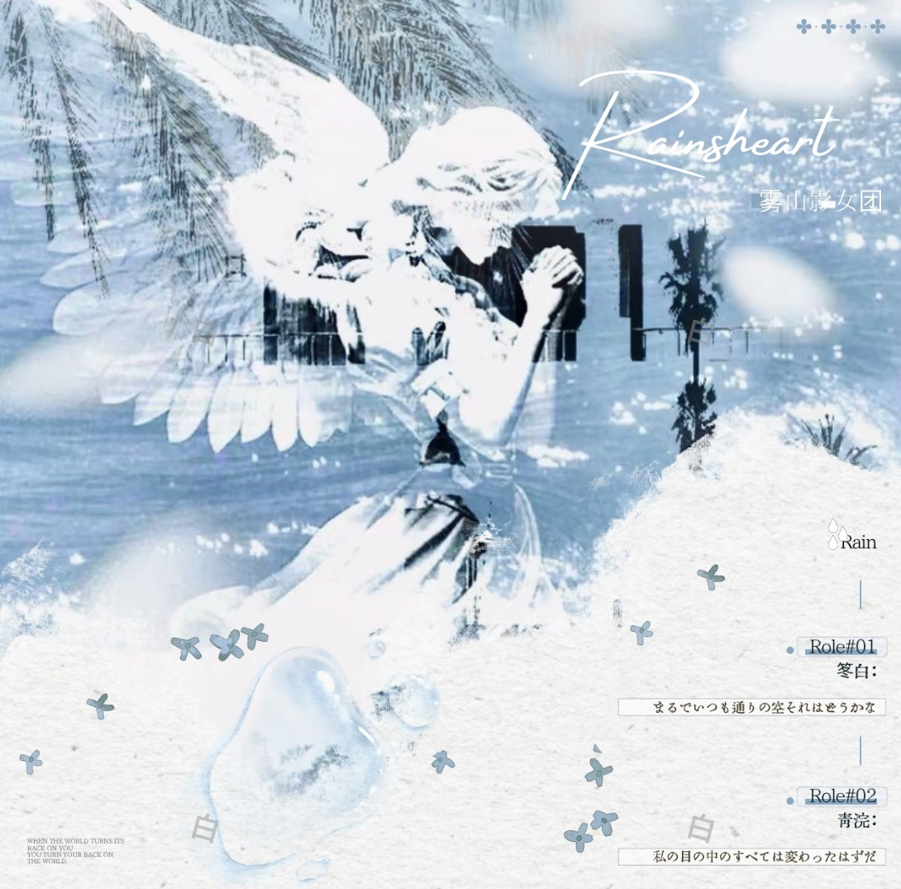
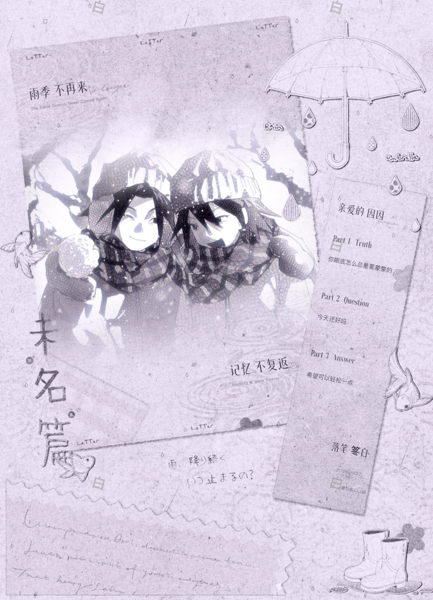
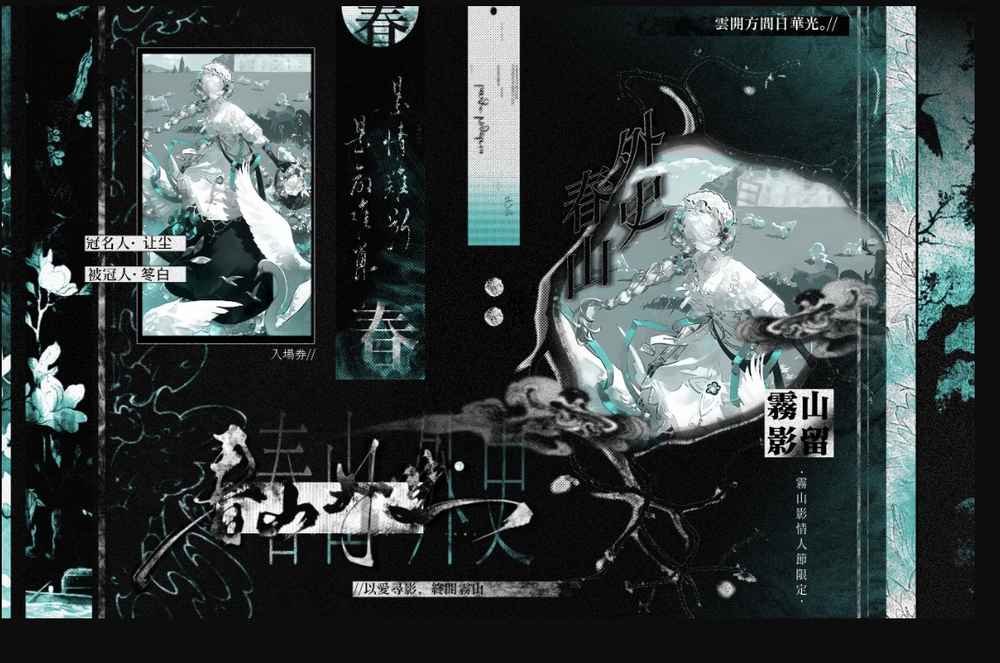
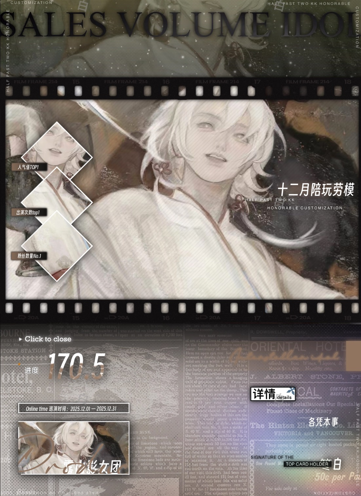
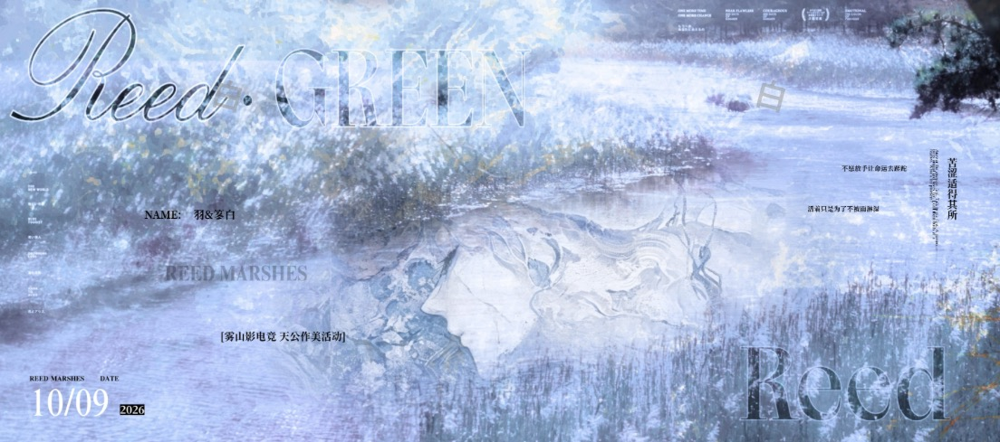

笗白
@DongBai_20
12.5万 订阅者
42 作品
999+ 留言
20-INFJ 女 巨蟹 直 稳定四无
常驻建模：0/1号 耳正/狼
属团：雾山影A
常驻建模：0/1号 耳正/狼
属团：雾山影A
前往留言板
主页
卡面
语录
留言板
见一面吗...
单内风格随机掉落因人而异。恋爱期间以你为主。
如果薄荷是你的左耳
文字有时候太贫瘠 有些感情太重太浓 像一团棉花堵在心口 你问我想说什么 我不知道 于是我看着你 突然就好想好想叹气
听说你真的喜欢我
好想和你一直纠缠在一起 幸福也好 痛苦也罢 摇摇欲坠的红线 都阻止不了 我想和你一辈子的心

"你是我的氟西汀"
N0001 / 限定

"玫瑰到了花期"
N0002 / 虚恋

"沉溺于你的眼"
N0003 / 纯爱

"同频共振"
N0004 / 救赎

"为你画地为牢"
N0005 / 病娇

"月亮不知道"
N0006 / 日常

"第十三月"
N0007 / 悖论

"雪落下的声音"
N0008 / 治愈
“我想变成你手上的一枚戒指，一枚尺寸不合适的戒指，让你时刻惶恐不安的，恐惧着我在某一刻消失”
“你是我的 氟西汀
能救我的命”
能救我的命”
“无论是怎样的梦，久久停留都会成为牢狱”
——涩泽龙彦《异端的肖像》
——涩泽龙彦《异端的肖像》